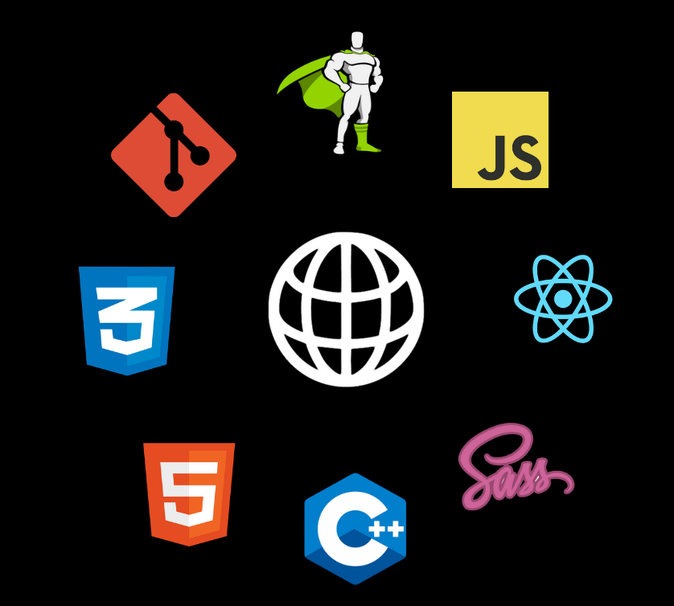

Aditya
Front-End
Web Developer
Web Developer
Hello, and welcome to my personal portfolio! I'm Aditya Jain, currently pursuing a Bachelor of Technology in Computer Science and Engineering at Manipal University Jaipur.I am 19years old as of september 2023 and studying in 3rd year. I'm passionate about the world of web development, with a particular focus on front-end development. However, my ambitions extend far beyond just the front-end, as I aspire to become a full-stack web developer and venture into the exciting realm of web3 development.
My journey in the world of coding and web development began with a fascination for creating visually appealing and user-friendly websites.
What is a Frontend Web Developer?
In simple terms, a frontend web developer is like an architect and designer for websites. They're the ones who make websites look good and work smoothly when you visit them on your computer or phone. They choose the colors, arrange the content, and make sure everything is easy to use. They're like the artists who create the beautiful exterior and user-friendly interiors of the websites you see and interact with.
Front-end web development can be relatively easy to start with, especially for simple projects. However, it can become more challenging as you work on complex websites and applications. The difficulty level depends on your experience
Frontend web developers often need to be multitaskers. They typically handle various responsibilities simultaneously, including designing user interfaces, writing code in HTML, CSS, and JavaScript, ensuring cross-browser compatibility, optimizing performance, and considering accessibility.
You don't need to be a designer to be a frontend developer, but having design skills can be helpful. Frontend developers primarily focus on coding and making websites work.
Why do we need frontend web developers? Because without them, websites would be as user-friendly as a movie without characters.!" 😄
Front-end web development can be relatively easy to start with, especially for simple projects. However, it can become more challenging as you work on complex websites and applications. The difficulty level depends on your experience
Frontend web developers often need to be multitaskers. They typically handle various responsibilities simultaneously, including designing user interfaces, writing code in HTML, CSS, and JavaScript, ensuring cross-browser compatibility, optimizing performance, and considering accessibility.
You don't need to be a designer to be a frontend developer, but having design skills can be helpful. Frontend developers primarily focus on coding and making websites work.
Why do we need frontend web developers? Because without them, websites would be as user-friendly as a movie without characters.!" 😄
Skills & EXPIRIENCE
-

HTML
-

CSS
-

GIT
-

GSAP
-

JavaScript
-
React
-
Sass
-

CPP
My Work
- All
- Landing Page
- Product Page
- Web Apps
- Games
- React Js
Over time, the passion of frontend webdeveloper has grown into a deep-seated commitment to mastering the intricacies of web technologies. I thrive on the constant evolution and innovation within this field, and I'm always eager to explore the latest trends and tools.
If my personal portfolio intrests you...I am available for doing internship work from home between Sept 2023 and Jauary 2024. Thankyou for taking your precious time to see surf my portfolio.